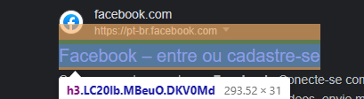
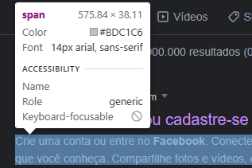
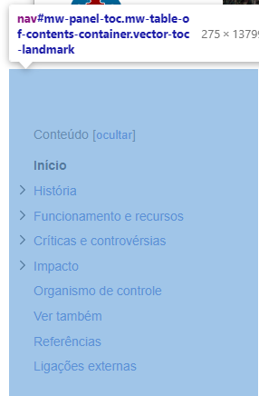

Segue abaixo algumas tags e suas funções. É importante deixar seu site com uma boa diversidade de tags para que o navegador possa configurar o portal do seu site, desta forma,seu código fica mais simples de se entender.
<h1>
A tag <h1> é utilizada para marcar o título de uma página na web no
html.
A tag <h1>é o resultado de pesquisa, quando colocado no código, o navegador vai usar as palavras chaves que sua pesquisas e mostrar todos os resultados relevantes a sua pesquisa. A tag pode ser encontrada também no primeiro resultado da sua pesquisa.
<h2>
A tag <h2> é utilizada para marcar o subtítulo na pagina web do html.
É sempre encontrado no primeiro resultado da pesquisa.
<h3>
A tag <h3> é utilizada é o header 3, o segundo subtítulo na hierarquia dos cabeçalhos, utilizado para esmiuçar ainda mais o assunto abordado.
A tag pode ser encontrada em grande parte da sua busca, sendo encontrados em todos os links de sites.
<p>
A tag <p> é utilizada para demarcar um parágrafo.
é só um paragrafo memo 😃.
<div>
A tag <div> é utilizada para alterar o estilo em partes específicas da página e posicionar objetos.
A tag pode <div> pode ser encontrada em grande parte de um site, sendo a tag de texto mais usada do html.
<span>
A tag <span> é um elemento HTML que possui a finalidade de agrupar um conteúdo textual e até mesmo apresentar um conteúdo visual. O <span> é bastante parecido com o elemento <div>.
A tag pode ser encontrada na maioria das descrições logo abaixo dos links para os sites.
<nav>
A tag <nav> representa uma seção de uma página que aponta para outras páginas ou para outras áreas da página, ou seja, uma seção com links de navegação.
Na maioria das vezes pode ser encontrada na borda esquerda do site como uma lista de links.
<u>
A tag <u> é utilizada para sublinhar um espaço definido no texto.
<strong>
A tag <strong> é utilizada para conteúdos de "grande importância", incluindo coisas urgentes (como alertas).
<em>
A tag <em> é utilizada para dar ênfase a um espaço definido.
<i>
A tag <i> é utilizada para destacar um espaço definido por algum motivo, por exemplo, termos técnicos, expressões em outros idiomas e etc.